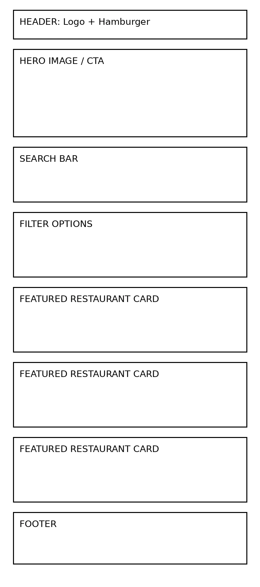
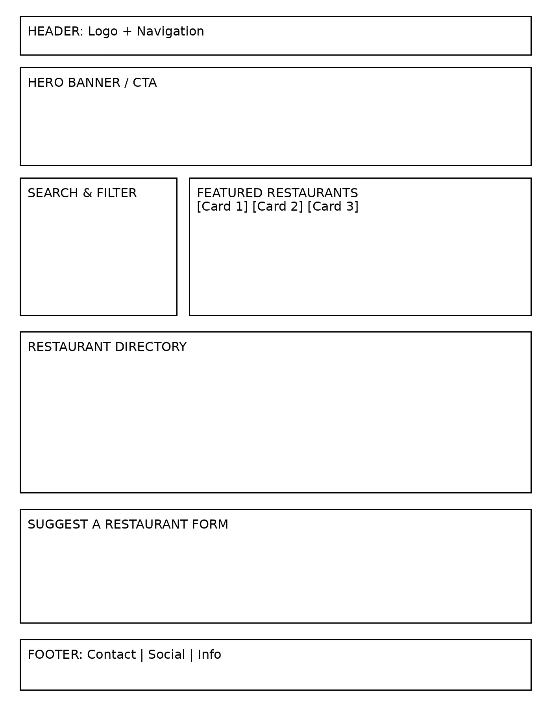

Site Name
Abuja Meal Finder
This name was selected because it clearly describes the site's function: helping users find meals and restaurants specifically within Abuja, Nigeria. It's direct, location-based, and easy to remember for branding. The name targets both residents and tourists searching for food options in the capital city.
Optional domain: abujamealfinder.com
Site Purpose
The Abuja Meal Finder website serves as a comprehensive directory of restaurants, bukkas, suya spots, and cafes in Abuja. The site provides users with a searchable, filterable list of 20+ food establishments including their category, price range, location, specialty dish, and description. Key services include: browsing all restaurants, filtering by category like Local or Fast Food, viewing detailed information in a modal, and submitting suggestions for new restaurants via a form. The purpose is to simplify meal discovery and promote local food culture in Abuja.
Scenarios
These questions represent our target audience: Abuja residents, visitors, and food enthusiasts.
- Scenario 1: "I'm new to Wuse 2 and craving amala. Which local restaurants near me serve authentic amala and ewedu?"
- Scenario 2: "Where can I find affordable Fast Food options under ₦₦ for a quick lunch in Garki?"
- Scenario 3: "I want to try suya tonight. Which grill spots are highly recommended and what are their specialties?"
Color Schema
The color palette reflects Nigerian food culture: earthy green for freshness and gold for the richness of local cuisine.
#1a472a
#f9a825
- Primary - Dark Green #1a472a: Used for headers, footer, navigation background, buttons, and headings. Represents freshness and Nigerian greenery.
- Secondary - Gold #f9a825: Used for accents, call-to-action buttons, links, and highlights. Represents jollof rice and rich flavors.
- Background - Off-White #fdfdfd: Used for page background to ensure readability.
- Text - Dark Gray #333333: Used for body text to meet contrast standards.
Typography
Two fonts were selected from Google Fonts for readability and modern feel.
- Montserrat (Sans-serif): Used for all headings h1-h3. Bold weight 700. Provides strong, modern branding for the site name and section titles.
- Open Sans (Sans-serif): Used for body text, paragraphs, navigation, and forms. Chosen for excellent readability on all screen sizes.
Wireframes
Mobile View – Home Page

Layout: Logo + hamburger at top, hero text + CTA button, weather section, 2x1 spotlight cards stacked, footer.
Desktop View – Home Page

Layout: Logo + horizontal nav at top, wide hero banner, weather + 3x1 spotlight grid side by side, footer.